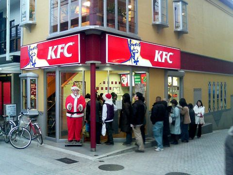
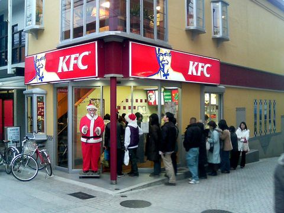

In Japan its tradition to go to a KFC and eat it as a Christmas feast. Back in 1974, the American fast food restaurant KFC released a festive marketing campaign in Japan. The seemingly simple slogan "Kurisumasu ni wa kentakkii!" (Kentucky for Christmas!) spawned a national tradition that still thrives to this day.
 
